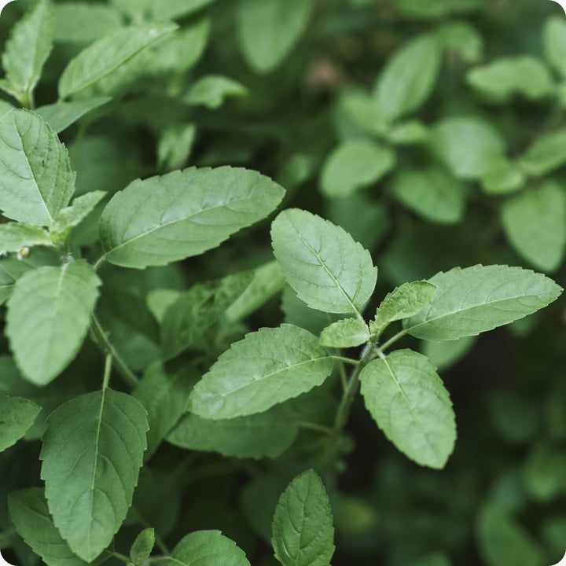

तुळस / Tulasi

Scientific Name: Ocimum tenuiflorum
Benefits:
- Boosts immunity and fights infections
- Relieves stress and anxiety
- Improves respiratory health
- Natural detoxifier
How to Take Care:
- Keep in a sunny location (4–6 hours sunlight)
- Water daily in summer, alternate days in winter
- Use organic compost every 15 days
- Protect from frost and overwatering
Price: ₹120